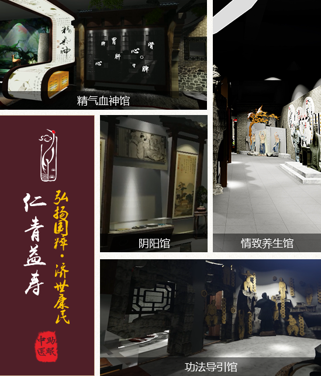
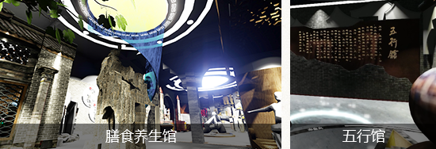
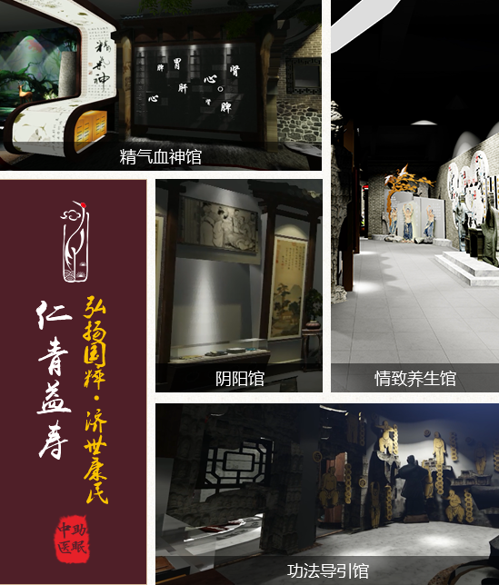
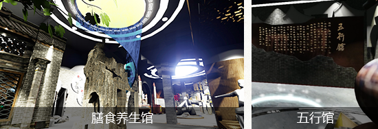

仁青益寿中医养生博物馆是首个以中医养生文化为主题的博物馆，里面包含精气血神馆、阴阳馆、情致养生馆、功法导引馆、膳食养生馆、五行馆等六大馆，以传统中医名方理论为指导，遵循阴阳五行生化收藏之变化规律，对人体进行科学调养，保持生命健康活力。在这里可以怡养心神、调摄情志、调剂生活，从而达到保养身体、减少疾病、增进健康、延年益寿的目的。
 微信: JY94715


仁青益寿中医养生博物馆是首个以中医养生文化为主题的博物馆，里面包含精气血神馆、阴阳馆、情致养生馆、功法导引馆、膳食养生馆、五行馆等六大馆，以传统中医名方理论为指导，遵循阴阳五行生化收藏之变化规律，对人体进行科学调养，保持生命健康活力。在这里可以怡养心神、调摄情志、调剂生活，从而达到保养身体、减少疾病、增进健康、延年益寿的目的。
 